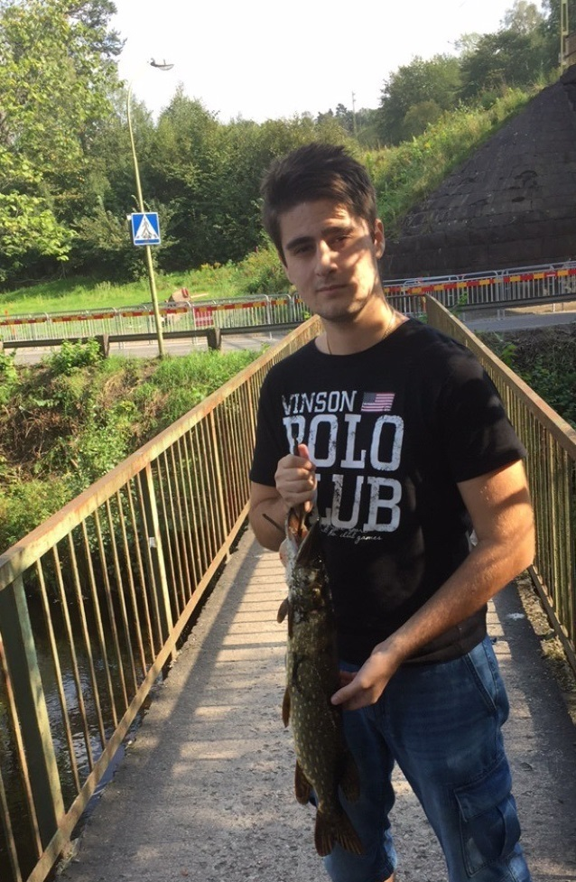

Om Mig Fiske Legenden

Uppdragsbeskrivning
Sedan jag var en liten pojke har jag gillat fiske. Jag brukar fiska med min pappa, kompisar eller släktingar.
Anledningen att jag har valt att göra webbsidan om fiske är delvis mitt eget intresse för fiske delvis att jag vill ge lite information till andra personer unga som gamla vilka bra ställen finns för fiske och vilka fiskarter existerar i Öresund.
I Malmö finns flera olika fiskeföreningar som erbjuder olika aktiviteter för ungdomar, nybörjare eller erfarna fiskare, som jag har beskrivit på min webbplats.
Jag har också valt att presentera kortfattat regler och bestämmelser gällande fiske som råder i Sverige och vissa som gäller för Malmö.
Kontakt Info:
Email: Adis01@hotmail.se
Telefon: 0738982720